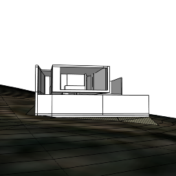

Levantamiento Topográfico Arquitectónico · Hoja 1 de 2
Lote 8, Manzana 147
Fraccionamiento México, Morelia, Mich.
Expediente digital del predio ubicado en Colonia Puerto de Buenavista, Morelia, Michoacán. Incluye poligonal interactiva calculada desde coordenadas UTM, cuadro de construcción, plano topográfico oficial en PDF y modelo 3D en SketchUp.
Área total
281.30 m²
Perímetro
68.23 m
Escala y curvas
1:100
Fecha de levantamiento
16 Jun 2025
Geometría a escala real
Poligonal y Cuadro de Construcción
UTM · WGS84 (Zona 14N)
Pasa el cursor sobre un vértice o lado
Cuadro de Construcción
Área = 281.30 m²| Lado | Rumbo | Dist. (m) | V | UTM X | UTM Y |
|---|
Colindancias y cotas destacadas
- Lado 1–2 (13.06 m): Colinda con Lote 9.
- Lado 2–3 (20.10 m): Colinda con Calle (subtramos 7.38 m + 12.72 m).
- Lado 3–4 (15.07 m): Frente hacia Calle Zacamixtle.
- Lado 4–1 (20.00 m): Colinda con Lote 7 (subtramos 12.79 m + 7.21 m).
Trabe: 105.32 m
Muro E: 107.59 m
Muro SE: 105.11 m
Archivo de diseño tridimensional
Modelo 3D en SketchUp

L8_MEXICO_SKP_3.skp.Detalles del archivo 3D
¿Cómo abrir el modelo 3D?
Los navegadores web no renderizan archivos .skp de forma nativa.
Descarga el archivo y ábrelo en SketchUp Desktop, SketchUp Free (Web)
o el visor gratuito Trimble SketchUp Viewer.
Documentación oficial
Plano Topográfico (PDF)
¿No se muestra el visor integrado en tu dispositivo?
Abre o descarga el PDF aquí.
Datos de referencia